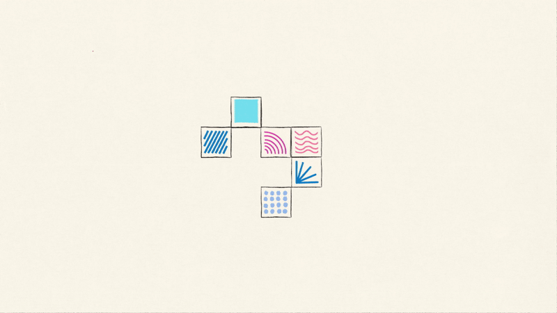
Celebrating the work and philosophy of information designer Giorgia Lupi.
When asked to choose my design hero, someone who inspires me as a designer, I immediately thought of Giorgia Lupi. Lupi is an information designer and partner at Pentagram, known for her philosophy of data humanism. I first found her work through her New York Times opinion piece describing her experience with long Covid. I’ve since been drawn to her friendly, approachable way of communicating serious topics. It was an honor to reimagine a system that encapsulates Giorgia Lupi and everything I love about her work.
Looking for data all around us.
A 1-minute animation encourages viewers to practice looking for data in their daily lives by bringing them into a colorful, data-filled world.
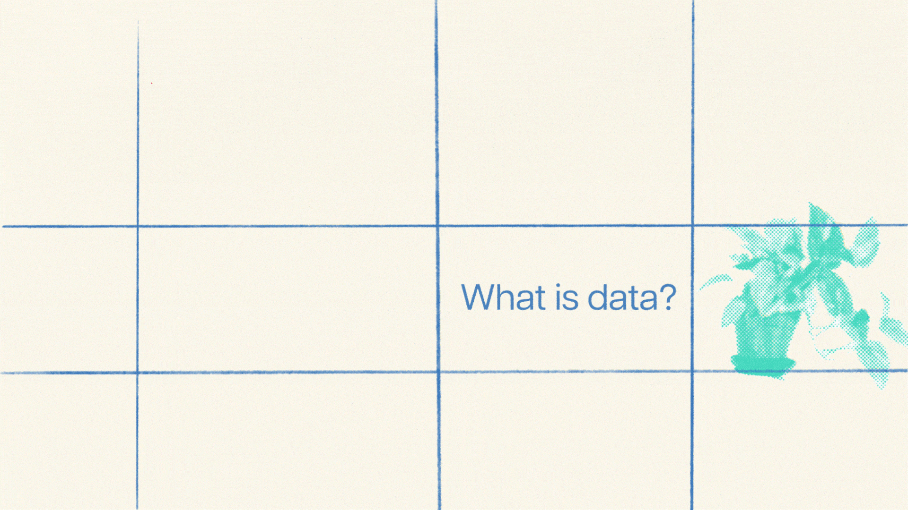
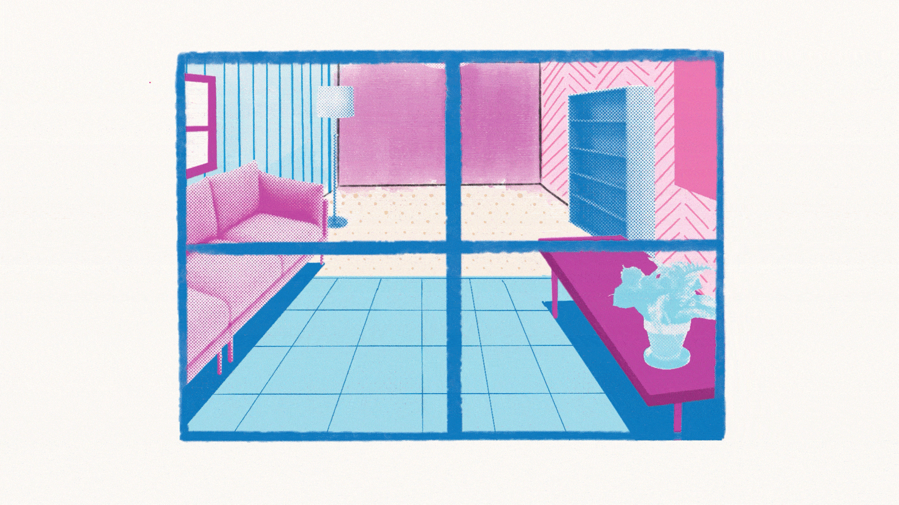
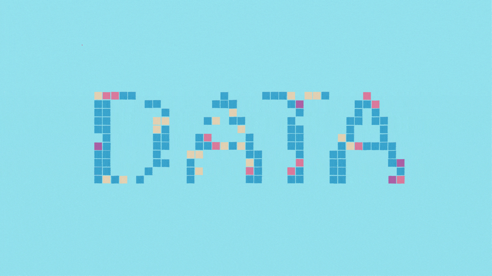
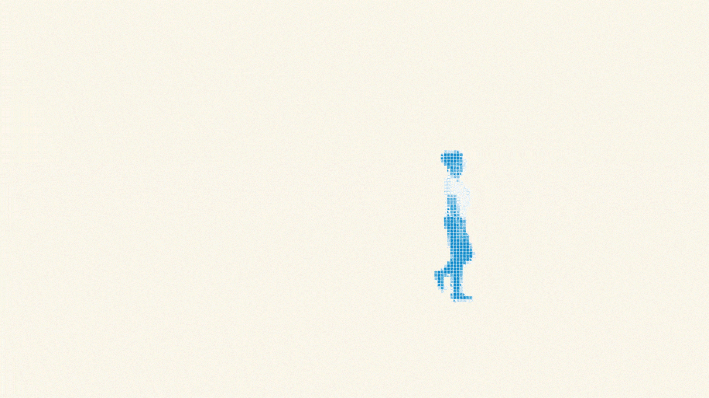
Guiding viewers through Lupi’s process in a 16 page booklet.
Using Lupi’s 4 tenets of data humanism as a framework, readers understand how Lupi translates data to art. The booklet also aims to help readers interpret her complex visualizations through a motif of data and keys, culminating in an original visualization of her career.
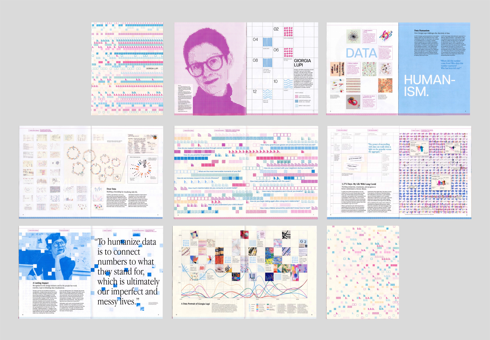
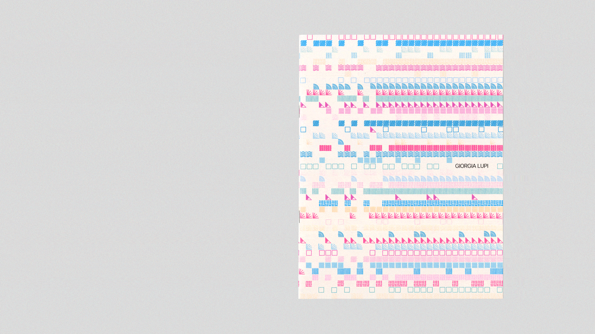
An interactive visualization documents Lupi’s work and career.
A project on Giorgia Lupi wouldn’t be complete without a data visualization component. I scoured the internet for all of Lupi’s public work that I could find, and organized each project into a spreadsheet to find trends in the subjects, mediums, collaborators, and more. I built a data-viz system from scratch using my existing brand assets, and turned the visualization into an interactive website with HTML and CSS.
See the live website here (currently best suited to full screen on a computer).
Data humanism at a glance.
An informational poster introduces viewers to Lupi’s philosophy of data humanism and her analog approach to drawing with data.
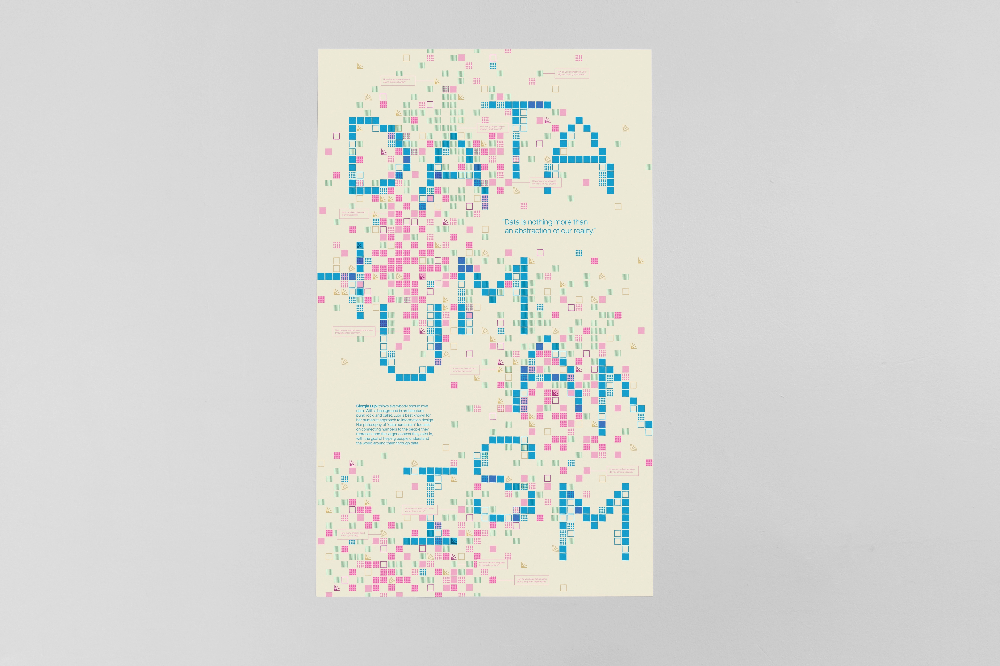
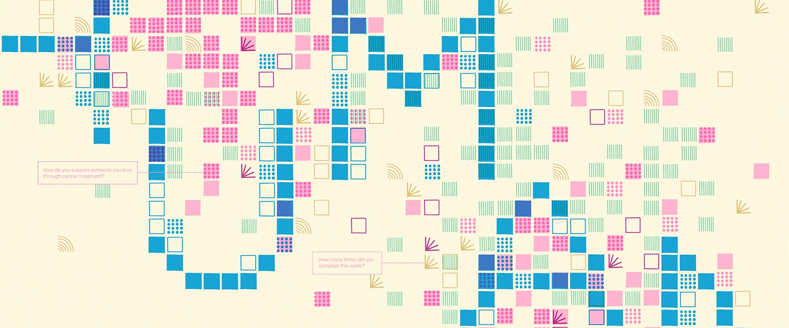
Shaping a scaleable system built around illustrated square data points.
The overarching narrative of this project in my mind was helping people reframe how they understand data: taking data from something rigid and gridded out in spreadsheets to something freeform, experimental, hand-drawn, and colorful. I flipped the spreadsheet motif by creating a set of hand-drawn square patterns. These patterns became the basis of letterforms, data visualizations, and coded ASCII art.
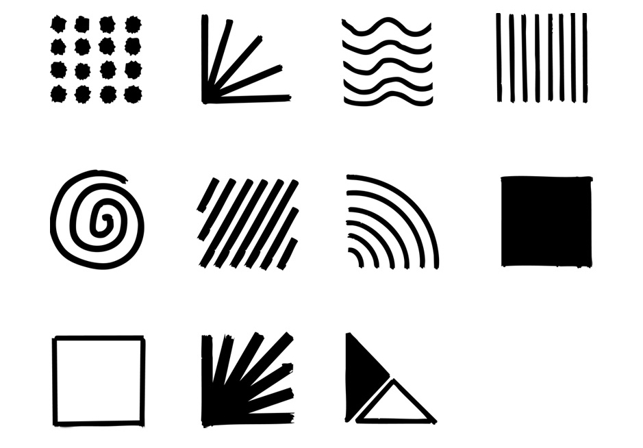
Research, sketching, and experimenting.
There were many, many iterations of this project, mainly as I figured out the best way to include a data visualization of my own. For a long time, I tried to include it in the poster before eventually deciding that viewers would better be able to engage with it through a website. I also experimented with several different custom typefaces.
Versions of the poster explored ways to include a data visualization of Lupi’s work inside the letters of her name, alongside contextual events throughout her career. I ended up saving this visualization idea for the booklet where viewers would have more time to digest so much information.
Ultimately, this project taught me how to iterate quickly and find my own voice as a designer. By experimenting with new tools, coding, sketching, and printing out poster after poster, I was able to develop a system that could morph across each phase of the project and also hold them all together.
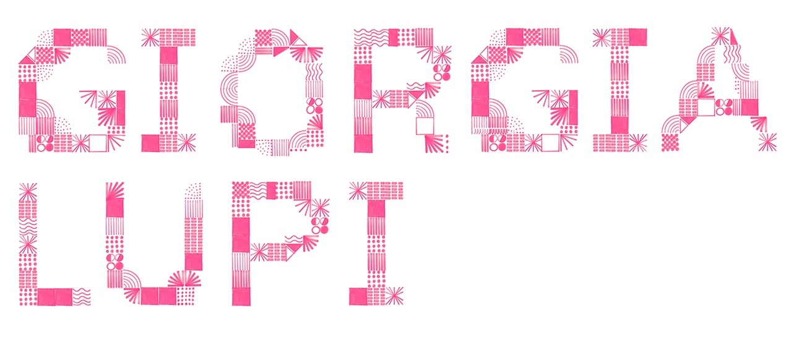
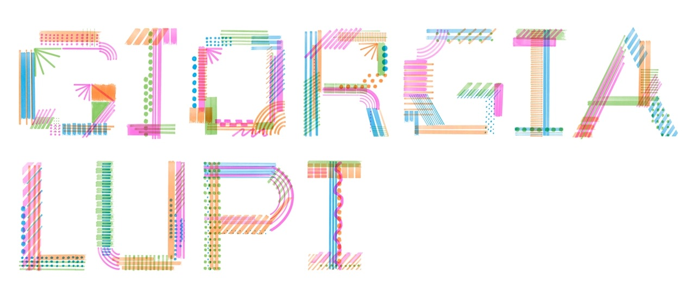
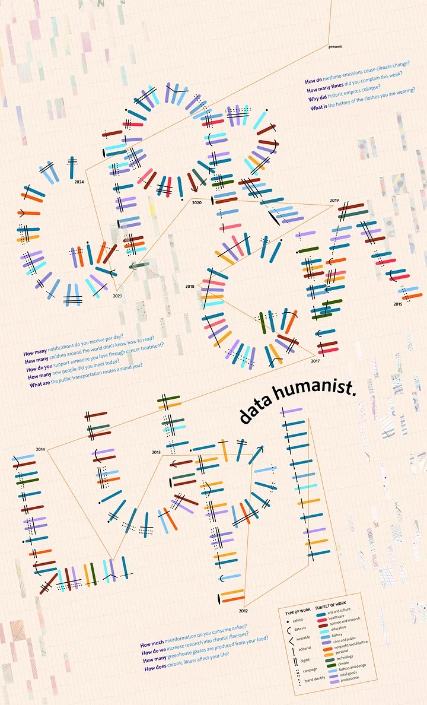
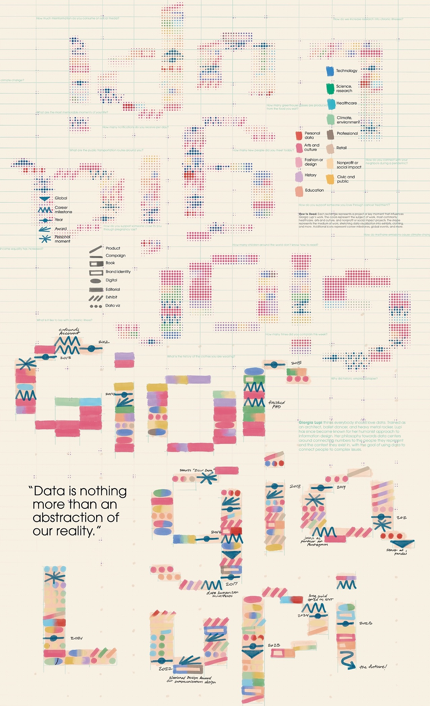
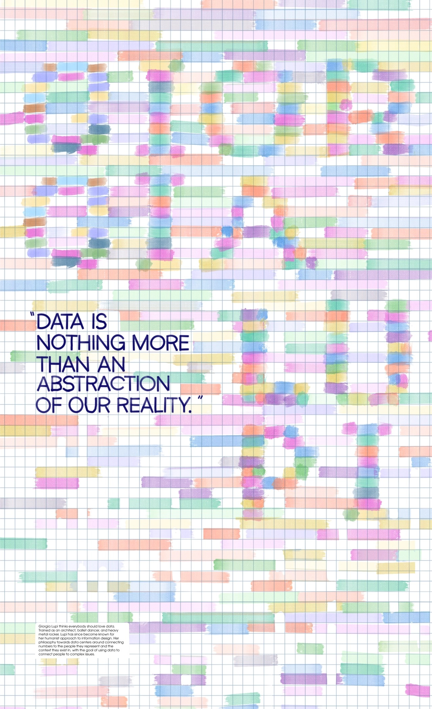